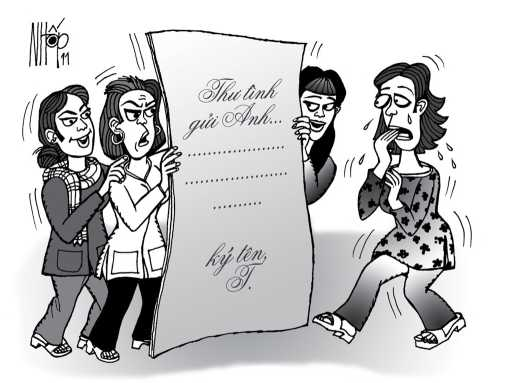

Báo chữ to (đại tự báo) vốn là một “đặc sản” ở Trung Quốc, giúp người ta đánh nhau bằng chữ nghĩa. Đồng Nai từng xảy ra một vụ đánh ghen bằng báo chữ to ngộ nghĩnh. Hồ sơ đã tới tòa nhưng tòa không thể xử bởi vụ việc không là hình sự và cũng không là dân sự.
Câu chuyện xảy ra tại xã Xuân Bảo, huyện Xuân Lộc, tỉnh Đồng Nai. Năm 1992, chị T và anh Đ, cùng cư ngụ trong xã, có mối quan hệ yêu thương khắng khít. Họ thật sự muốn tiến tới hôn nhân. Đến năm 1996, anh Đ ngỏ lời với gia đình chị T, xin cưới T làm vợ. Thế nhưng, cha mẹ chị T không đồng ý gả con gái cho anh Đ bởi... ông bố của anh Đ đã từng có vợ bé! Gia đình chị T sợ anh Đ sau này phát huy rực rỡ “truyền
thống” ấy thì khổ trăm bề cho con gái mình. Chi bằng tiên hạ thủ vi cường, không có hôn nhân với hít nhân gì cả là chắc ăn nhất.
Cuộc tình của lứa đôi do đó không ra... cái nước màu gì. Hai bên cùng đau khổ chia tay. Tháng 12-1996, chị T bỏ lên thành phố Biên Hòa, làm công nhân trong một xí nghiệp. Anh Đ được cha mẹ hỏi cưới chị ML. Những tưởng “Phút cuối, không nghe được em nói, không nhìn được một lần, dù một lần đơn sơ”.
Nhưng than ôi, tình cũ không rủ cũng tới. Mà anh Đ lại làm nghề lái xe, cái nghề vi vu đây đó, dễ đi dễ gặp. Do vậy, sau khi có vợ rồi, anh Đ vẫn thường có cơ hội gặp gỡ chị T. Vả chăng, Xuân Lộc - Biên Hòa thì có bao nhiêu cây số lắm để gọi là ngàn dặm cách trở? Chị ML nắm được những thông tin không lấy chi làm phấn khởi ấy. Chị ghen tức và sự ghen tức ấy chỉ chờ có cơ hội là bùng nổ.
Ngày 22-3-1999, trong khi giặt quần áo cho chồng, chị ML tìm được hai bức thư của chị T gửi cho chồng mình. Sau khi duyệt thật kỹ hai thư, chị ML đã chọn lọc và “biên tập” hai dòng cực kỳ phạm húy. Chị cất giữ làm tang chứng của vụ việc. Hai bức thư được viết trên giấy tập học trò, đầu thư không để ngày tháng, cuối thư chỉ ký tắt mà không ghi rõ họ tên. Tuy nhiên, “nhà văn” sáng tác ra hai lá thư thì chị ML rành sáu câu vọng cổ. Chị bèn đem chuyện ấy ra hỏi chồng. Anh Đ cho biết thư ấy của chị T gửi.
Ngày 16-4-1999, chị ML đem hai lá thư photocopy, phóng lên khổ lớn A3, ngang cỡ tờ Tuổi Trẻ mà bạn đang đọc, in thành 20 bản, chữ nào chữ nấy mập như con gà mái mẹ! Chị tuyên truyền trong chị em tiểu thương ở chợ Xuân Bảo: “Con T gửi thư cho chồng tui”.
Ngày 18-4-1999, chị T trở về Xuân Bảo, tình cờ đi chợ lại gặp chị ML. Chị T hỏi chị ML: “Tao gửi thư cho chồng mầy hồi nào?” rồi đánh ML một chưởng. Hai bên định ấu đả với nhau, may mà bạn hàng trong chợ can thiệp kịp thời. Hai chị ai về “dinh” nấy.
Ức lòng, chị ML quyết ra bạch thư, công bố sự thật cho bàn dân thiên hạ rõ. Chiều hôm ấy, chị ML mang năm tờ photocopy các thư của chị T ra chợ, vừa dán lên vách chợ, vừa đưa văn bản tận tay kính nhờ chị em tiểu thương làm biên tập viên báo chí, duyệt qua nội dung.

.Các biên tập viên nghiệp dư công tác tại tòa soạn báo chợ Xuân Bảo hôm ấy có cơ hội thưởng thức văn chương của chị T. Họ duyệt đã đời, khen câu này hay, chê câu kia dở, chữ này viết đúng ngữ pháp, chữ nọ chưa đạt yêu cầu. Chỉ có nhuận bút là họ không trả cho tác giả mà thôi. Nắm được thông tin này, Công an xã Xuân Bảo đã kịp thời thu hồi hết những tờ báo chữ to. Gia đình chị T viết đơn gửi lên Công an xã, xin được giải quyết công bằng.
Đọc “hồ sơ vụ án”, chúng tôi thấy chị T viết thư cũng rất phải phép, đàng hoàng. Chị viết cho người bạn trai cũ:
“Em không muốn anh bỏ vợ anh... Anh nên nhớ hạnh phúc của anh chính là hạnh phúc của em”.
Chị cũng cho biết có người hỏi chị làm vợ nhưng chị chưa đồng ý vì vẫn còn thương nhớ anh. Thế nhưng, thư cũng có một vài chi tiết... đại phạm húy bởi chị còn mơ hồ tin vào một điều:
“Vì em thương anh nên em chờ đợi và hy vọng rằng mình sẽ có một ngày được gần nhau”.
Cái chữ “gần” này bị các biên tập viên tòa soạn báo chợ Xuân Bảo bàn tán kịch liệt. Có nữ biên tập viên gọi “gần” là “sát rạt”. “Giả tỷ như mát-xa được người ta gọi là mát gần vậy mà” - một biên tập viên đưa thí dụ. Căn cứ vào nội dung, cả hai thư thể hiện rõ chị T viết sau khi anh Đ đã lập gia đình.
Trước Công an xã, đôi bên căng như dây đàn lên đúng cao độ quốc tế, không chịu hòa giải. Ngày 13-51999, Hội đồng bảo vệ an ninh trật tự xã lập biên bản, nhận định: Anh Đ đã có vợ rồi mà vẫn quan hệ với bạn gái cũ là sai. Chị T viết thư cho anh Đ cũng là sai. Chị ML photocopy thư và tán phát cho chị em ngoài chợ duyệt cũng... sai nốt. Nhà nho nói “Tam ngu thành hiền” nhưng ở đây ba sai thành ra... sai bét. Hội đồng yêu cầu chị ML xin lỗi chị T trước nhân dân xã.
Chị ML gân guốc:
“Tôi hoàn toàn đúng”.
Chẳng ai nhìn ra khuyết điểm, cuộc hòa giải không thành. Hội đồng bèn phải đem “hồ sơ vụ án” lên trình Tòa án nhân dân huyện Xuân Lộc phân xử.
Ông Nguyễn Văn Chẩn, phó chánh án Tòa án nhân dân huyện Xuân Lộc vừa cười vừa nói với tôi:
“Tôi mới nhận được hồ sơ ngày 27-5-1999 và đã đọc qua. Thú thật, tôi chưa bao giờ gặp một vụ án mà tình tiết kỳ khôi dị hụ thế này. Anh đọc một chút để viết cái gì đó giúp bà con rút kinh nghiệm cho đời sau”.
Theo ông, nếu xét về mặt dân sự thì những tình tiết ở đây chưa xác định được, Bộ luật Dân sự cũng chưa điều chỉnh các dạng quan hệ như thế này. Bởi lẽ, người vợ (chị ML) chưa bắt gặp được chồng mình có quan hệ như vợ chồng với cô bạn gái cũ. Nếu mọi chuyện rõ ràng hơn, chị vợ có thể nộp đơn ra tòa xin ly hôn. Nhưng ông Chẩn thì không bao giờ muốn cặp vợ chồng trẻ này ly hôn hết.
Nếu xét về mặt hình sự thì “vụ án” chưa thực hiện các bước điều tra, truy tố. Cơ quan điều tra chưa khởi tố vụ án, khởi tố bị can; viện kiểm sát chưa truy tố. Chưa ai bị gọi là bị can vì có dấu hiệu phạm tội. Còn tội danh “cố ý gây thương nhớ” thì Bộ luật Hình sự chưa để cập tới mà chỉ có tội danh cố ý gây thương tích. Hồ sơ gửi trực tiếp lên tòa thì tòa cũng bó tay chấm com, không thể xử lý về mặt hình sự được.
Chị ML chưa phạm tội làm nhục người khác theo Điều 116 Bộ luật Hình sự. Tội làm nhục quy định “xúc phạm nghiêm trọng danh dự, nhân phẩm của người khác” thì ở đây chị ML có xúc phạm nhưng không nghiêm trọng (không đánh chị T gây thương tích, không xé quần áo...). Chị ML cũng chưa phạm tội vu khống theo Điều 117 bởi vì chị không “bịa đặt hoặc loan truyền những điều biết rõ là bịa đặt” Chị có trong tay hai bức thư của chị T gửi cho chồng mình và cả chị T, anh Đ cùng xác nhận điều đó thì bịa đặt sao được? Chị ML cũng không phạm tội xâm phạm bí mật hoặc an toàn thư tín theo Điều 121 bởi chị giặt quần áo cho chồng mới... lòi thư ra chứ không phải lục lọi và xé thư riêng của chồng.
Ông phó chánh án cho rằng vụ việc đánh ghen qua báo chữ to này là vụ việc hy hữu nhưng chỉ nên dừng lại ở mức xử lý hành chính. Tốt nhất, chị ML nên xin lỗi chị T công khai tại địa phương. Và ông rất mong các bậc làm cha mẹ không nên ngăn cản những đôi lứa yêu nhau tiến tới hôn nhân lành mạnh, tiến bộ.
Một ông cha có vợ bé có thể sinh ra người con trai rất chung thủy; một ông cha chung thủy có thể sinh ra người con trai có vợ bé. Chuyện đó là do... hoàn cảnh. Tôi về chợ Xuân Bảo, đứng ngắm các... bức vách đã từng được dán báo chữ to. May mà các chị chưa sử được Kim cương chỉ của phái Thiếu Lâm, dùng chỉ công ở ngón tay khắc chữ vào vách. Hú vía! Nếu có Kim cương chỉ thì e rằng vụ việc đã trở thành vụ án hình sự rồi.